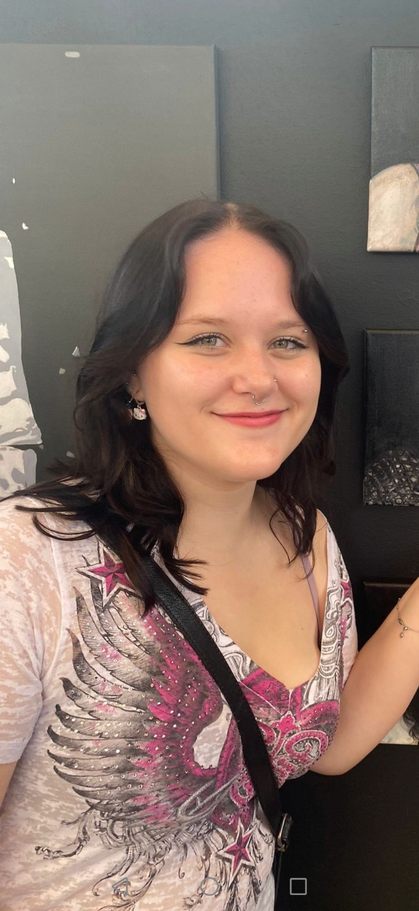

Creative, warm and always building
Hi, I’m Anabelle Brushett, a first year illustration student at Brighton University. I’m building this site as an evolving space to share my artwork, creative experiments and commissioned pieces.
My work is inspired by character, personality and visual storytelling. I enjoy creating artwork that feels expressive, thoughtful and personal, whether that’s a pet portrait, a custom illustration or something completely unique based on a client’s idea.
- First year Illustration student at Brighton University
- Available for selected commissions and custom requests
- Interested in portrait work, pets, character ideas and one-off pieces
- This portfolio will continue to grow with new examples over time
What I can create
I’m currently building out commissions around pet portraits, people portraits, custom illustrations, character-led artwork and creative one-off ideas. If you have a concept in mind, I’d love to hear about it.